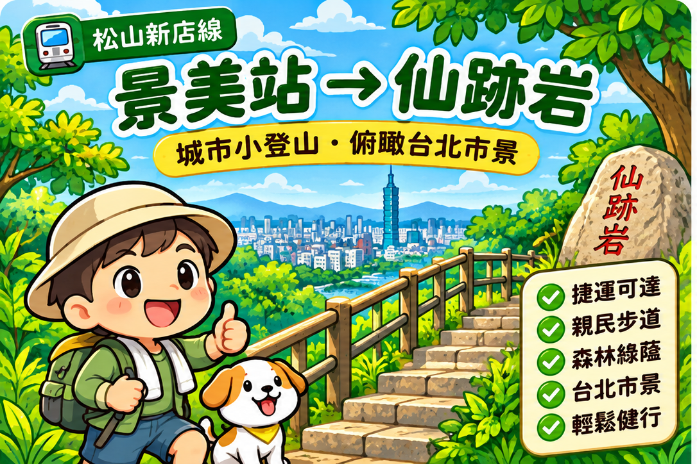

景美站 → 仙跡岩 → 景美站
景美捷運站 → 景興路 243 巷登山口 → 沿步道階梯上行 → 仙跡岩景觀區 → 循原路返回。
全程有階梯與坡度，並非平坦無障礙步道；請預留休息與拍照時間。
不用開車，從景美捷運站走進文山綠意。循景興路 243 巷登山口拾階而上，欣賞仙跡岩山林景色，再沿原路慢慢返回。

仙跡岩位於臺北市文山區，是適合安排半日散步的城市郊山。這篇以「景美站出發、景興路 243 巷登山口上山、原路折返」為主，讓第一次造訪的朋友也能掌握方向。
本篇依公開景點資訊及路線規劃整理，非水哥實際健行紀錄。封面為 Q 版風格插畫，並非現場照片；請依當日天候、體力與現場指標調整。
景美捷運站 → 景興路 243 巷登山口 → 沿步道階梯上行 → 仙跡岩景觀區 → 循原路返回。
全程有階梯與坡度，並非平坦無障礙步道；請預留休息與拍照時間。
建議抓約 1.5～2 小時作為半日行程的初步安排，實際耗時會因路況、停留點與個人體力不同而變動。
上述時間為行程規劃參考，非實測紀錄；不將單一估算當作固定所需時間。
從城市街道轉進山林，感受綠意與步道的節奏。遇到濕滑石階請放慢腳步。
仙跡岩因岩石與相關傳說而聞名。請在開放、安全的區域欣賞，不為拍照翻越護欄。
天氣晴朗時，可從合適的開闊處眺望文山周邊景色；實際視野受天候與植被影響。
下山後若還有時間，可在景美站周邊休息或尋找適合的蔬食餐點；店家營業資訊請另行確認。
捷運：搭乘松山新店線至「景美站」，出站後依導航步行至景興路 243 巷仙跡岩登山口。
回程：沿原登山步道下山，從景興路 243 巷返回景美站；山區岔路請依現場指標辨識。
地圖按鈕為地點搜尋，不代表已驗證的山徑導航；山區以現場指標、官方公告與安全狀況為準。
攻略整理日期：2026 年 11 月 6 日。景點開放、路況與交通可能異動，出發前請確認官方公告與現場標示。